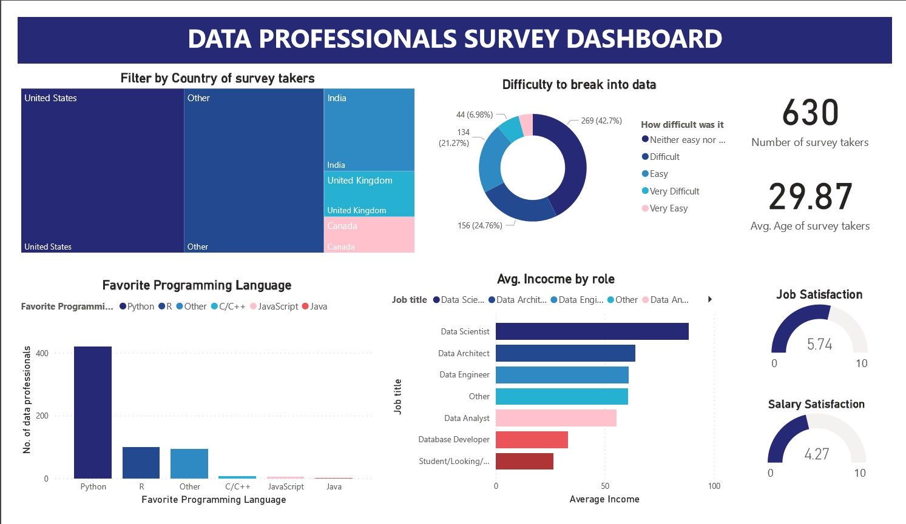

PYTHON PROJECT
 Data Professionals Survey Analysis
This Power BI project visualizes survey data collected by Alex the Data Analyst from data professionals across various countries. The dashboard offers insights into key aspects of the data community, including:
- Country distribution of survey participants
- Favorite programming languages among data professionals
- Average salary by role, offering a snapshot of earning potential across positions
- Challenges in entering the field, shedding light on perceived barriers
- Demographics, such as the average age and count of survey takers
Job and salary satisfaction, providing a perspective on professional fulfillment
The goal of this project is to deliver an interactive and visually engaging analysis that supports data enthusiasts, recruiters, and aspiring professionals in understanding global trends in the data industry.